먼저 생각해 보세요.
Ich schenke ihr ein Buch. 이 문장에서 '그녀에게'는 무엇일까요?
받는 사람은 3격(ihr), 주는 물건은 4격(ein Buch)이에요.

2월 1일은 Emma의 생일이에요. 친구들이 선물을 준비해서 파티에 왔어요.
눌러서 들어 보세요.
먼저 생각해 보세요.
Ich schenke ihr ein Buch. 이 문장에서 '그녀에게'는 무엇일까요?
받는 사람은 3격(ihr), 주는 물건은 4격(ein Buch)이에요.
Lektion 7의 낱말 다섯 개를 다시 떠올려 보세요.
문법 Dativ (meinem Freund, meiner Oma), schenken, geben + Dativ und Akkusativ, für + Akkusativ
이 과를 마치면 생일을 축하하고, 누구에게 무엇을 선물하는지 말할 수 있어요.
금요일 쉬는 시간이에요. Emma가 자리에 없을 때 친구들이 이야기해요.
들으면서 찾아보세요. Lukas는 파티에 무엇을 준비하나요?
일요일 오후, Emma의 생일 파티예요.
들으면서 찾아보세요. Emma는 할머니에게 무엇을 받았나요?
두 대화를 듣고 답하세요.
Yuna는 Emma에게 무엇을 선물하나요?
Elif kauft Blumen für Emma.
Lukas는 왜 선물을 사지 못하나요?
Lukas는 파티에 무엇을 준비하나요?
Emma는 할머니에게 무엇을 받았나요?
Das Buch gefällt Emma nicht.
Das gefällt mir sehr. 책이 아주 마음에 든다고 해요.
낱말 21개예요. 낱말이나 예문 앞의 단추를 누르면 소리가 나요. 명사는 der, die, das를 색으로 구분했어요.
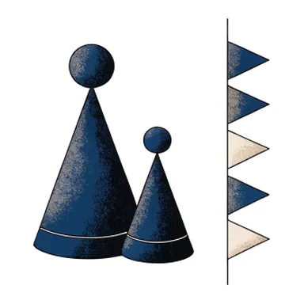
feiern, hat gefeiert 축하하다, 파티를 하다
Wir feiern am Sonntag.우리는 일요일에 파티를 해요.
einladen (du lädst ein, er lädt ein) 초대하다
Ich lade dich ein.너를 초대할게.
die Einladung, die Einladungen 초대, 초대장
Danke für die Einladung!초대해 줘서 고마워!
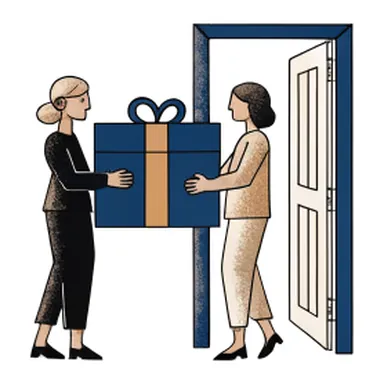
der Gast, die Gäste 손님
Die Gäste kommen um drei.손님들은 세 시에 와요.
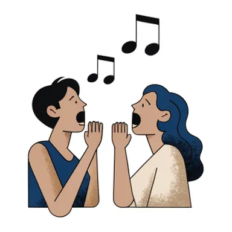
singen, hat gesungen 노래하다
Zuerst singen wir.먼저 노래를 불러요.
glücklich 행복한, 기쁜
Emma ist glücklich.Emma는 기뻐요.
Alles Gute zum Geburtstag! 생일 축하해!
Alles Gute zum Geburtstag, Emma!생일 축하해, Emma!
Herzlichen Glückwunsch! 축하해!
Du hast Geburtstag? Herzlichen Glückwunsch!생일이야? 축하해!
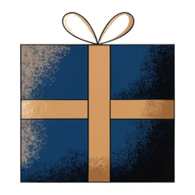
das Geschenk, die Geschenke 선물
Das Geschenk ist für dich.그 선물은 네 거야.
schenken 선물하다
Ich schenke ihr ein Buch.나는 그녀에게 책을 선물해요.
geben (du gibst, er gibt) 주다
Kannst du mir eine Vase geben?꽃병 좀 줄 수 있어요?
bekommen 받다
Emma bekommt viele Geschenke.Emma는 선물을 많이 받아요.
für ~을 위해, ~에게 줄
Das ist für dich.이건 너를 위한 거야.
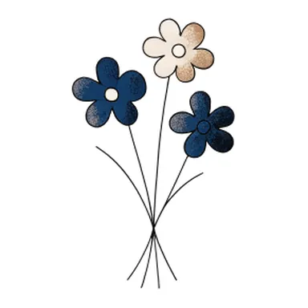
die Blume, die Blumen 꽃
Die Blumen sind schön.꽃이 예뻐요.
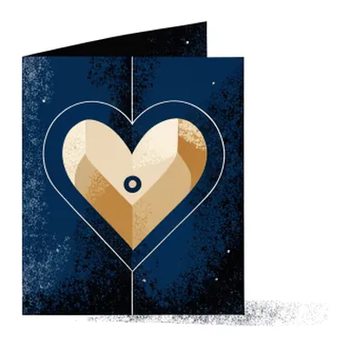
die Karte, die Karten 카드
Wir schreiben eine Karte.우리는 카드를 써요.
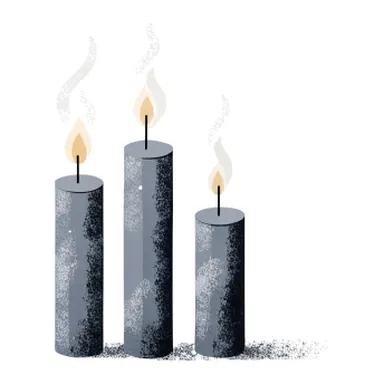
die Kerze, die Kerzen 초
Der Kuchen hat fünfzehn Kerzen.케이크에 초가 열다섯 개 있어요.
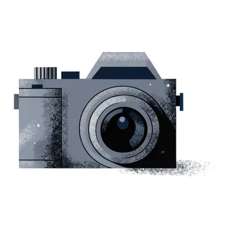
die Kamera, die Kameras 카메라
Die Kamera ist neu.그 카메라는 새것이에요.
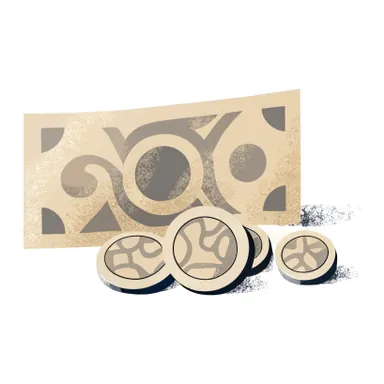
das Geld 돈
Ich habe kein Geld.나는 돈이 없어요.
das Fest, die Feste 축제, 잔치
Das Fest war schön.축제는 즐거웠어요.
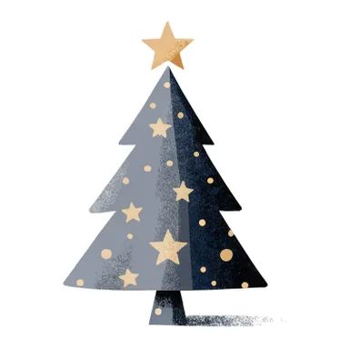
Weihnachten 크리스마스
Weihnachten ist im Dezember.크리스마스는 12월에 있어요.
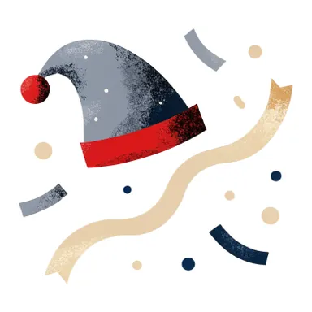
der Karneval 카니발
Der Karneval in Köln ist lustig.쾰른의 카니발은 재미있어요.
이 과의 낱말로 여덟 문제를 풀어요.
예문을 보고 답해 보세요.
meine Schwester가 '여동생에게'가 될 때 meine는 무엇으로 바뀌었나요?
규칙
'누구에게'(Wem?)는 3격(Dativ)으로 말해요. der와 das 명사 앞에서는 -em, die 명사 앞에서는 -er로 끝나요. mein, dein, sein, ihr, ein, kein이 모두 같은 방식으로 바뀌어요.
| der Vater, der Freund | das Kind | die Mutter, die Oma | |
|---|---|---|---|
| ~은, ~는 | mein Vater | mein Kind | meine Mutter |
| ~에게 | meinem Vater | meinem Kind | meiner Mutter |
| ~에게 | deinem Freund | einem Kind | seiner Oma |
주의 1과에서 배운 dem, der와 끝 글자가 같아요. dem Vater는 meinem Vater, der Mutter는 meiner Mutter예요.
예문을 보고 답해 보세요.
Ich schenke ihr ein Buch. 받는 사람과 물건 가운데 무엇을 먼저 말했나요?
규칙
schenken(선물하다), geben(주다), kaufen(사 주다)은 '누구에게'와 '무엇을'을 함께 써요. 받는 사람은 3격, 물건은 4격이에요. 보통 받는 사람을 먼저 말해요.
| 누가 | 동사 | 누구에게 (3격) | 무엇을 (4격) |
|---|---|---|---|
| Ich | schenke | meiner Freundin | ein Buch. |
| Lukas | gibt | seinem Vater | den Kuchen. |
| Wir | kaufen | Emma | Blumen. |
| Oma | schenkt | mir | eine Kamera. |
주의 geben은 e가 i로 바뀌어요. du gibst, er gibt. 친구에게 부탁할 때는 Gib mir bitte das Buch!라고 해요.
예문을 보고 답해 보세요.
'너를 위해'라고 말할 때 für 뒤에 무엇을 썼나요?
규칙
für 뒤에는 항상 4격(Akkusativ)이 와요. 대명사는 mich, dich, ihn, sie, uns를 써요. der 명사 앞에서는 den, einen, meinen이 돼요.
| ~은, ~는 | ich | du | er | sie | wir |
|---|---|---|---|---|---|
| für … | für mich | für dich | für ihn | für sie | für uns |
주의 schenken은 3격과 함께 쓰고 für는 4격과 함께 써요. Ich schenke meinem Bruder ein Buch. Das Buch ist für meinen Bruder.
Emma와 Thomas가 할머니 생일 이야기를 해요. 듣고 답하세요.
Omas Geburtstag
Emma Papa, Oma hat am Samstag Geburtstag. Was schenken wir ihr?
Thomas Ich mache ihr einen Kuchen. Oma isst gern Kuchen.
Emma Und ich? Ich kaufe ihr Blumen.
Thomas Gute Idee. Und Mama schenkt ihr ein Buch.
Emma Und Yuna?
Thomas Yuna schreibt eine Karte für Oma.
할머니의 생일은 언제인가요?
Was macht Thomas für Oma?
Wer kauft Blumen?
Yuna는 무엇을 하나요?
듣고 알맞은 것을 고르세요.
Lukas는 누구에게 꽃을 선물하나요?
Ich schenke meiner Mutter Blumen.
Elif는 남자 형제에게 무엇을 선물하나요?
Ich schenke meinem Bruder ein Spiel.
카드는 누구에게 주는 것인가요?
Die Karte ist für meine Oma.
Emma는 친구들에게 무엇을 받았나요?
Meine Freunde haben mir ein Buch geschenkt.
Emma가 보낸 초대장이에요. 읽고 답하세요.
Einladung
Liebe Yuna, lieber Lukas, liebe Elif,
ich habe am ersten Februar Geburtstag. Dann bin ich fünfzehn!
Ich lade euch ein. Die Party ist am Sonntag um drei Uhr bei mir zu Hause.
Es gibt Kuchen und Pizza. Wir hören Musik und tanzen.
Könnt ihr kommen? Schreibt mir bitte!
Eure Emma
Die Party ist am Samstag.
Die Party ist am Sonntag um drei Uhr.
Emma는 몇 살이 되나요?
파티에서는 무엇을 먹나요?
Emma는 친구들에게 무엇을 부탁하나요?
알맞은 형태를 고르세요.
Ich schenke Vater ein Buch.
Ich schenke Mutter Blumen.
Lukas gibt Schwester ein Spiel.
Emma schreibt Oma eine Karte.
Was schenkst du Bruder?
Yuna hilft Freund Lukas.
알맞은 대명사를 고르세요.
Emma hat Geburtstag. Wir schenken ein Buch.
Lukas hat Geburtstag. Ich schenke ein T-Shirt.
Ich habe Geburtstag! Meine Oma schenkt eine Kamera.
Du hast Geburtstag? Ich schenke Schokolade!
Wir haben Hunger. Thomas gibt Kuchen.
für 뒤에 알맞은 말을 고르세요.
Das Geschenk ist für .
Die Blumen sind für Mutter.
Ich kaufe ein Buch für Bruder.
Die Karte ist für .
Ist der Kuchen für ?
Das ist für .
표현과 뜻을 짝지으세요.
낱말을 순서대로 눌러 문장을 만드세요.
나는 그녀에게 책을 선물해.
우리는 Emma에게 줄 꽃을 사.
너는 남자 형제에게 뭘 선물해?
할머니가 나에게 카메라를 선물해 주셨어.
듣고 그대로 써 보세요.
Alles Gute zum Geburtstag! 생일 축하해!
Das ist für dich. 이건 네 거야.
Was schenken wir ihr? 그녀에게 뭘 선물할까?
Ich lade dich ein. 너를 초대할게.
Die Party ist am Sonntag um drei. 파티는 일요일 세 시야.
Kannst du kommen? 올 수 있어?
Danke für die Einladung! 초대해 줘서 고마워!
Ja, ich komme gern. 응, 기꺼이 갈게.
Ich kann leider nicht kommen. 아쉽지만 못 가.
Alles Gute zum Geburtstag! 생일 축하해!
Herzlichen Glückwunsch! 축하해!
Das ist für dich. 이건 네 거야.
Was schenken wir ihr? 그녀에게 뭘 선물할까?
Ich schenke ihm ein Buch. 나는 그에게 책을 선물할래.
Ich kaufe Blumen für Emma. 나는 Emma에게 줄 꽃을 살래.
대화 B에서 역할을 하나 고르세요. 상대의 말은 음성으로 나오고, 내 차례에는 직접 말해요.
선물을 주고 싶은 사람, 줄 선물, 내가 받고 싶은 선물을 적으세요. 완성된 문장을 소리 내어 읽어 보세요.
Ich schenke meiner Mutter ein Buch.
Zum Geburtstag möchte ich eine Kamera.
Eine Einladung
내 생일 파티에 친구를 부르는 초대장을 써 보세요.
Liebe Mina, ich habe am zwölften März Geburtstag. Ich lade dich ein! Die Party ist am Samstag um vier Uhr bei mir zu Hause. Es gibt Kuchen und Pizza. Wir hören Musik und spielen. Kannst du kommen? Schreib mir bitte! Deine Yuna
다 쓴 뒤에 확인해 보세요.
Ich kann jemanden einladen.친구를 초대할 수 있어요.
Ich kann zum Geburtstag gratulieren.생일을 축하할 수 있어요.
Ich kann sagen, wem ich was schenke.누구에게 무엇을 선물하는지 말할 수 있어요.